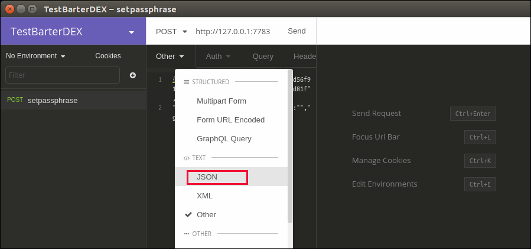
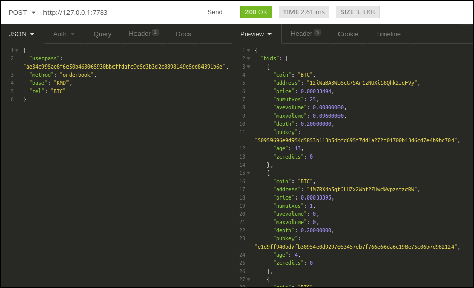

Guides¶
How to use BarterDEX using CLI¶
Using BarterDEX with the Command Line Interface, you get access to all the low level Remote Procedure Calls (RPC) that exist in BarterDEX. It gives you power and control over how you want to be a trader / marketmaker. Throughout this guide, the command line (terminal) is used for installing BarterDEX.
Requirements¶
At this time, only Linux and MacOS are supported.
Linux (16.04)¶
Download and install Nanomsg:
git clone https://github.com/nanomsg/nanomsg
cd nanomsg
cmake .
make
sudo make install
sudo ldconfig
Install required packages:
sudo apt-get update && sudo apt-get install git libcurl4-openssl-dev build-essential
MacOS¶
To install Nanomsg on MacOS, it’s easiest to install it using Homebrew. Homebrew is a handy package manager for MacOS. If you don’t have it already, download it by entering the following into a Terminal window:
/usr/bin/ruby -e "$(curl -fsSL https://raw.githubusercontent.com/Homebrew/install/master/install)"
Afterwards, install Homebrew by typing:
brew install nanomsg
That’s it!
Installation & Setup¶
Installation is the same for Linux and MacOS. Start by cloning the SuperNET repository:
git clone https://github.com/jl777/SuperNET -b dev
This will download all the files necessary to start using BarterDEX from the command line. It uses the Development branch, assuring you with the latest updates. If you don’t want this, type git checkout master to work with more stable releases.
Now navigate to the SuperNET folder and execute the install script:
cd ~/SuperNET/iguana/exchanges
./install
This copies a bunch of scripts in the dexscripts folder, which is where we need to go next. This dexscripts folder now contains executable scripts that issue the most common API calls.
cd ../dexscripts
Before we can use any of these scripts, some security measures are needed to prevent bad actors from issuing API calls without your consent. The passphrase and userpass values take care of this security.
Create the passphrase file:
nano passphrase
This file should contain the following line, with a strong passphrase between the <>:
export passphrase="<strong userpass value here>"
Ctrl-x to exit, and press y to save the changes.
The userpass value is derived from the passphrase value, and in order to obtain the userpass value, we need to start BarterDEX. Starting BarterDEX (or actually the marketmaker process) is done by executing the client script, which basically is an automated combination of retrieving the latest updates and building the marketmaker executable file: (it can take a while before anything shows up)
./client
Let it load until you see a line that starts with >>>>>>>>>> DEX stats 127.0.0.1:7783. This means the BarterDEX node is now up and running and that it’s able to listen for commands.
To obtain the userpass value, we need to execute the setpassphrase script. Open a new terminal window, navigate to the dexscripts folder and execute the setpassphrase script:
cd ~/SuperNET/iguana/dexscripts
./setpassphrase
The response contains the userpass value. Copy this value and paste it in a newly created userpass file:
nano userpass
export userpass="<paste userpass value here>"
Ctrl-x to exit, y to save changes.
Everything is now good to go. From here on, you can issue any script that is in the dexscripts folder, such as the orderbook script, that fetches all the orders from the specified pair, or the getcoin script that gets all the coin-specific information from the coin as defined inside that script.
The API docs explain all the BarterDEX API calls.
How to use Insomnia together with the CLI¶
Insomnia is a great tool to replace the terminal window, but still be able to issue all the API calls in a visually more attractive way. Insomnia stores all the different API calls in a folder structure, with the possibility to set environment variables on all calls in a folder. This makes it quite easy to maintain different netid’s or manage multiple marketmakers on the same netid using a different RPC port.

Download Insomnia here: https://insomnia.rest. It is available for all platforms. This guide will use Linux as an example.
It is not necessary to have native coin daemons running. As you will see, managing different coins using Electrum in Insomnia is not difficult.
Make sure to follow the above guide: How to use BarterDEX using CLI. We need to be able to start a marketmaker instance from the command line in order to start using Insomnia.
The first call you need to do when you start a marketmaker instance, is to set the passphrase using the setpassphrase call. Normally, using a CLI, you go to ~/SuperNET/iguana/dexscripts and execute the setpassphrase script stored there. Now, we are going to open that script and copy the contents to Insomnia.
Go to the dexscripts folder:
cd ~/SuperNET/iguana/dexscripts
nano setpassphrase

Copy the contents of only the curl command to your clipboard (Ctrl-Shift-c):
curl --url "http://127.0.0.1:7783" --data "{\"userpass\":\"1d8b27b21efabcd96571cd56f91a40fb9aa4cc623d273c63bf9223dc6f8cd81f\",\"method\":\"passphrase\",\"passphrase\":\"$passphrase\",\"gui\":\"nogui\"}"
Now, go to Insomnia, and create a New Request (Ctrl-N).

Name it setpassphrase and click Create.
Now, paste the just copied curl command in the textfield area, right next to the the GET dropdown:

Insomnia recognises this curl command, and automatically extracts the ip-address and the data. Let’s call that middle part of Insomnia the Input screen. It still looks a bit ugly, so let’s make it look better.
Click on Other, and change Other to JSON.
Next, Beautify this JSON:

It should result in this:

Looks better, right? This process of copying a curl command from the dexscripts folder, creating a new request and pasting the curl command in Insomnia is what you probably need to do for most of the commands, like orderbook, buy and balances.
Now enter your passphrase in the area where the passphrase still is empty, between the 2 quotes. Start a marketmaker instance by running client from the dexscripts folder and let it boot. When it’s done booting, click the Send button in Insomnia for the setpassphrase script.
(if the output on the right side complains that the userpass has not been set, make sure to set the userpass value with ef7ca9d596f4d0b504011989c9261330d3ab6c0aa092e779ce6479f8c23cd413).
This is what you should see in the output part of the screen, when you clicked Send:

The next thing you probably want to see, is an orderbook for some pair, like KMD/BTC. Go to the dexscripts folder again, copy the complete curl command for orderbook and paste it in a new request. I called this new request orderbook KMD/BTC and the end result should look like this:
Since with KMD/BTC, you’re saying you want to buy KMD with BTC, the data in the JSON needs to be changed. Change REVS to KMD and KMD to BTC, such that "base": "KMD" and "rel": "BTC".
You also need to copy the userpass from the setpassphrase call we did before. On the second line in the output of the setpassphrase call, you see a userpass value. Copy this value and paste it in the orderbook request. It should end up like this:

Try Sending this request. It will complain that at least one of the coins is disabled, so we need to enable them. KMD is enabled by default, which means that if you have a native KMD daemon running, you don’t have to explicitly enable KMD. If you don’t have a KMD daemon, or a BTC daemon, you need to use a Electrum SPV for that. Let’s first enable both coins using Electrum.
Go to http://pad.supernet.org/electrum-servers where you’ll find a long list of all coins that support Electrum. Find BTC, copy the curl command and paste it in Insomnia, like you did with the other requests. Do the same for KMD in a new request, such that you end up with 2 requests: electrum BTC and electrum KMD:

Click Send for both requests, and if all is right, you’ll see a success message in the output screen.
Now that both coins are enabled (a successful electrum request automatically enables the coin), we can go to the orderbook request and see if something happens. If all is right, you’ll see something like this:
Environment variables¶
Filtering¶
Electrum calls¶
History¶
Insomnia stores a list of all the calls you did in the past, including its output. This is useful for debugging and retrieving information you might need at a later stage.
How to create a new BarterDEX trading network¶
Since BarterDEX is a peer-to-peer network, seeded by some ip-addresses to create the network, others can create a BarterDEX network of their own. This enables people to trade within a private group of traders, or to trade directly from person to person.
See New or private network in the API docs on how to do this.